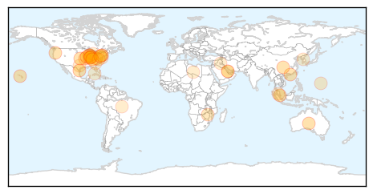
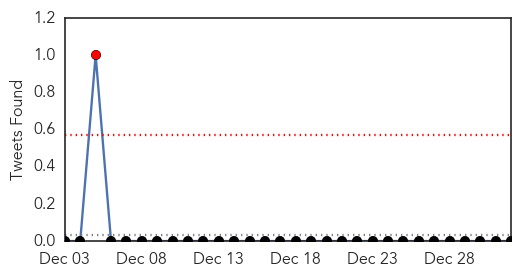

Unknown
30-Day Web Trend
0 alerts, 0 warnings

30-Day Twitter Trend
0 alerts, 0 warnings

Article Locations

Article Confidences

Top Articles:
- 0.991
- Valley pediatricians see spike in flu cases
- 0.989
- Doctors caution that flu season likely hasn't peaked
- 0.984
- Flu epidemic declared, how does it affect Tri-States?
- 0.977
- ACH offers advice on avoiding the flu
- 0.958
- Hawaii: Porcine Epidemic Diarrhea virus found on additional pig farms
- 0.952
- Ind. health officials tout flu shots amid outbreak
- 0.950
- Calls for more flu jabs after record annual number of cases in South Australia
- 0.926
- Hong Kong culls 19,000 birds amid avian flu alert
- 0.917
- Chicago Tribune
- 0.917
- Chicago Tribune
- 0.917
- Chicago Tribune
- 0.917
- Chicago Tribune
- 0.917
- Chicago Tribune
- 0.917
- Chicago Tribune
- 0.917
- Chicago Tribune
- 0.880
- Ind. health officials tout flu shots amid outbreak
- 0.880
- CDC: Flu “widespread” in Indiana as Tamiflu runs thin
- 0.866
- Medical issue forces Qatar Airways flight to make unscheduled UK landing
- 0.863
- Flu cases skyrocket; Second round of another strain may be on way
- 0.861
- Ind. health officials tout flu shots amid outbreak
- 0.814
- Hospital Takes Precaution to Prevent Spread of Flu
- 0.808
- West Texas News
- 0.759
- Catawba honors students spend fall semester studying infectious diseases
- 0.728
- WV MetroNews – Parkersburg hospital announces restrictions for visitors because of flu
- 0.683
- News, Weather, Sports, Breaking News
- 0.662
- Mass TB skin tests set
- 0.629
- UPDATE: Bayhealth Revises Visitation Policy Following Flu Outbreak
- 0.615
- Major outbreak of vesicular stomatitis officially over
- 0.585
- Former New York Governor Mario Cuomo dies aged 82
- 0.585
- Video: Cubans set sights abroad after thaw with US
- 0.585
- Syria and Iraq suffer record death tolls in 2014
- 0.585
- North Korean leader proposes talks with South
- 0.585
- Egyptian court orders retrial of jailed Jazeera journalists
- 0.585
- Italy mounts rescue for 450 migrants abandoned off coast
- 0.585
- Brazil’s Rousseff vows to tackle corruption in second term
- 0.585
- Bad weather hampers AirAsia search as first victim buried
- 0.568
- Mental health patient admissions to A&E set to reach record levels
- 0.539
- Aiken Regional among state’s penalized hospitals
- 0.523
- Fox 28: South Bend, Elkhart IN News, Weather, Sports
Top Tweets:
-
No tweets found for Jan 01, 2015
Swine Flu
30-Day Web Trend
30-Day Twitter Trend
1 alerts, 0 warnings

Article Locations
Article Confidences
Top Articles:
- 0.988
- First Swine Flu Case of 2015 Reported in Delhi
- 0.987
- Ghaziabad prepared to tackle swine flu, say officials
- 0.978
- 88 swine flu cases reported in Telangana, AP in 2014
- 0.959
- 88 swine flu cases reported in Telangana, AP in 2014
- 0.958
- Swine flu: No need to panic, says Nadda
- 0.955
- Swine flu: No need to panic, says Nadda
Top Tweets:
-
No tweets found for Jan 01, 2015